🚨 宏观金融危机监察报告
生成时间: 2025年09月20日 22:31:21
📋 报告说明
本报告基于FRED宏观指标，将当前值与历史危机期间基准值比较，以评估风险。
【数据由人采集和处理，请批判看待这些数据，欢迎email jiangx@gmail.com 任何问题讨论】
风险评分范围 0-100：50 为中性，越高越危险（除非指标设定为'越低越危险'）。
采用分组加权评分：先计算各组平均分，再按权重合成总分。
总分 = ∑(分组平均分 × 分组权重)，分组权重归一处理后合成。
过期数据处理：月频数据>60天、季频数据>120天标记⚠️，过期数据权重×0.9。
颜色分段：0–39 🔵 极低，40–59 🟢 低，60–79 🟡 中，80–100 🔴 高；50 为中性。
🎯 总体风险概览
-
加权风险总分: 42.0/100
-
成功监控指标: 23/26

📊 分组风险评分
-
rates_curve: 50.4/100 (权重: 15.0%, 指标数: 2)
-
rates_level: 29.1/100 (权重: 15.0%, 指标数: 5)
-
credit_spreads: 40.1/100 (权重: 15.0%, 指标数: 2)
-
fin_cond_vol: 21.4/100 (权重: 10.0%, 指标数: 2)
-
real_economy: 0.0/100 (权重: 15.000000000000002%, 指标数: 3)
-
housing: 48.1/100 (权重: 10.0%, 指标数: 3)
-
consumers: 64.1/100 (权重: 8.0%, 指标数: 3)
-
banking: 100.0/100 (权重: 7.000000000000001%, 指标数: 2)
-
external: 100.0/100 (权重: 5.0%, 指标数: 1)
总体风险等级: 🟢 低风险
🔴 高风险指标
房价指数: Case-Shiller 20城 YoY (CSUSHPINSA)
- 当前值: 331.515
- 基准值: 268.416 (noncrisis_p90)
- 风险评分: 100.0/100 🔴 高风险
- 偏离度: 63.099
- 历史Z分数: 0.00
- 方向说明: 该指标越高越危险
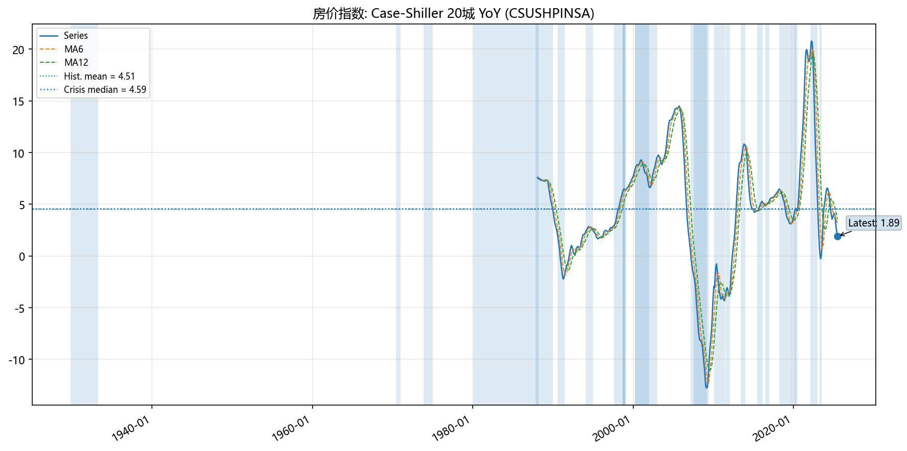
密歇根消费者信心 (UMCSENT)
- 当前值: 61.700
- 基准值: 80.670 (noncrisis_p35)
- 风险评分: 100.0/100 🔴 高风险
- 偏离度: -18.970
- 历史Z分数: 0.00
- 方向说明: 该指标越低越危险
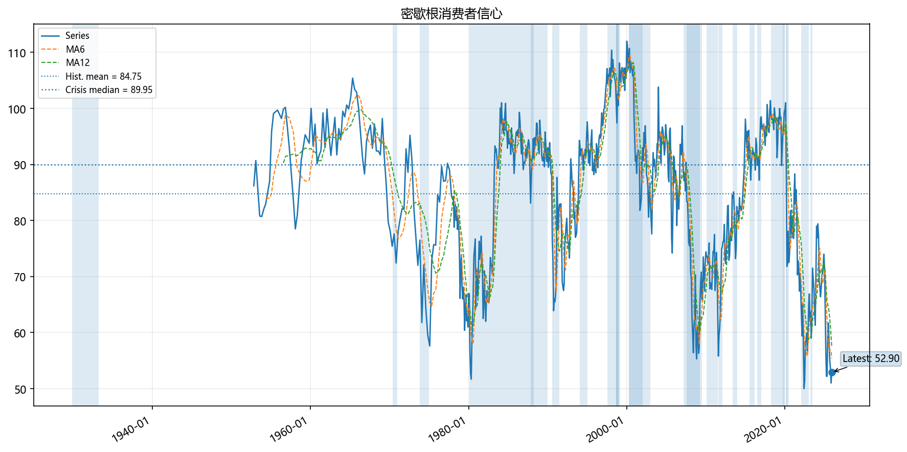
总贷款与租赁 YoY (TOTLL)
- 当前值: 13052.655
- 基准值: 6888.761 (noncrisis_p75)
- 风险评分: 100.0/100 🔴 高风险
- 偏离度: 6163.895
- 历史Z分数: 0.00
- 方向说明: 该指标越高越危险
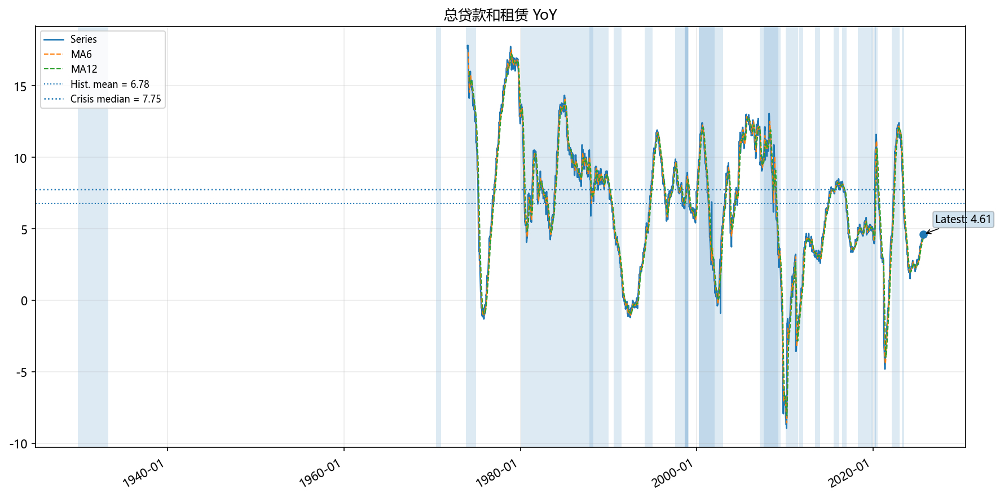
美联储总资产 YoY (WALCL)
- 当前值: 6608597.000
- 基准值: 3927074.500 (crisis_median)
- 风险评分: 100.0/100 🔴 高风险
- 偏离度: 2681522.500
- 历史Z分数: 0.00
- 方向说明: 该指标越高越危险
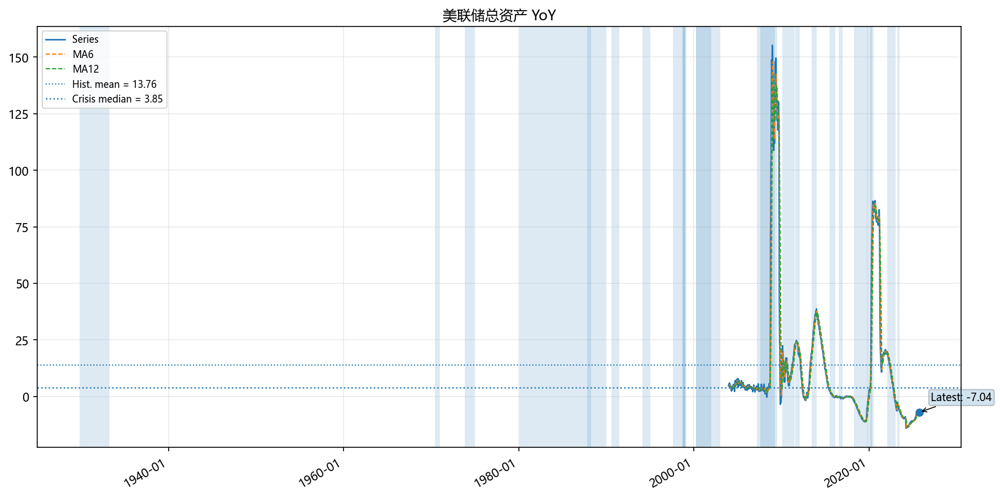
贸易加权美元指数 YoY (DTWEXBGS)
- 当前值: 120.490
- 基准值: 108.390 (noncrisis_median)
- 风险评分: 100.0/100 🔴 高风险
- 偏离度: 12.100
- 历史Z分数: 0.00
- 方向说明: 该指标越高越危险
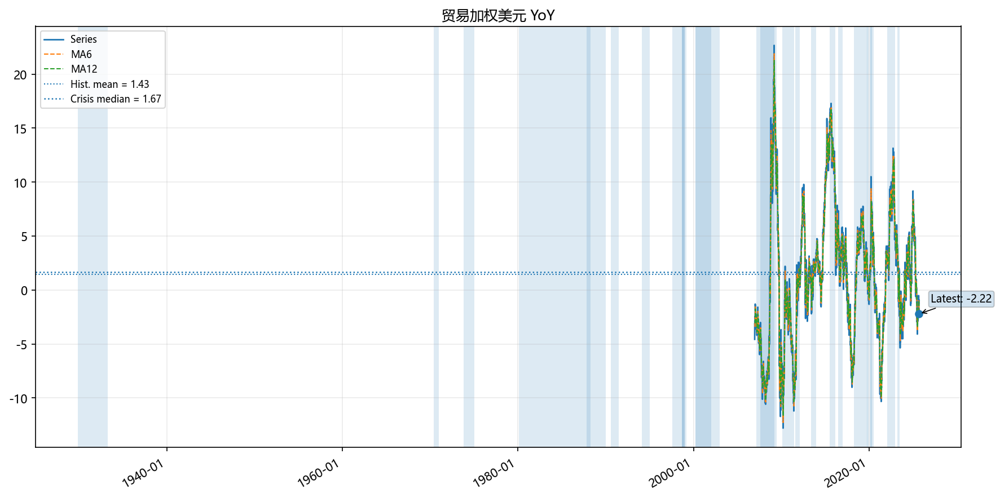
🟢 低风险指标
收益率曲线倒挂: 10年期-3个月 (T10Y3M)
- 当前值: 0.110
- 基准值: 0.580 (noncrisis_p25)
- 风险评分: 54.7/100 🟢 低风险
- 偏离度: -0.470
- 历史Z分数: 0.00
- 方向说明: 该指标越低越危险

收益率曲线倒挂: 10年期-2年期 (T10Y2Y)
- 当前值: 0.570
- 基准值: 0.180 (noncrisis_p25)
- 风险评分: 46.1/100 🟢 低风险
- 偏离度: 0.390
- 历史Z分数: 0.00
- 方向说明: 该指标越低越危险
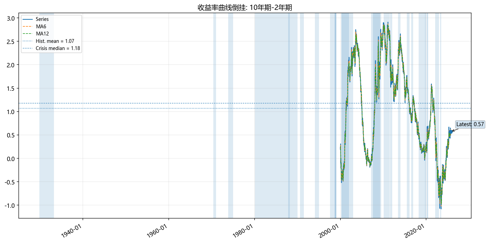
SOFR隔夜利率 (SOFR)
- 当前值: 4.140
- 基准值: 4.550 (noncrisis_p75)
- 风险评分: 45.9/100 🟢 低风险
- 偏离度: -0.410
- 历史Z分数: 0.00
- 方向说明: 该指标越高越危险
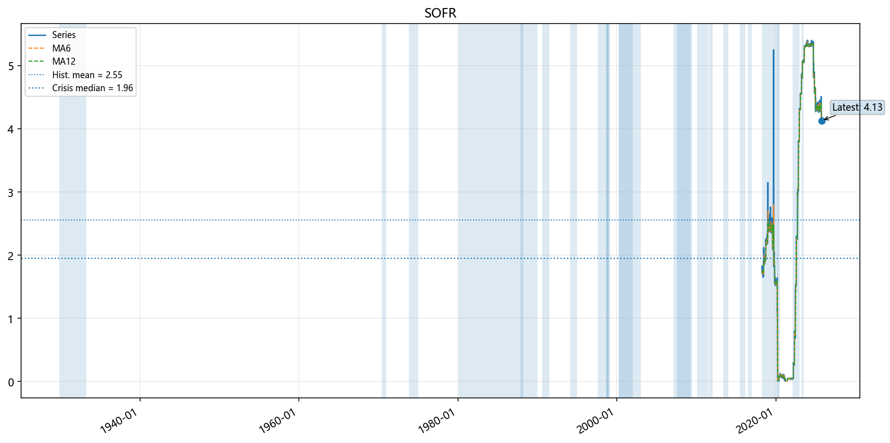
投资级信用利差: Baa-10Y国债 (BAA10YM)
- 当前值: 1.740
- 基准值: 1.850 (crisis_median)
- 风险评分: 48.9/100 🟢 低风险
- 偏离度: -0.110
- 历史Z分数: 0.00
- 方向说明: 该指标越高越危险
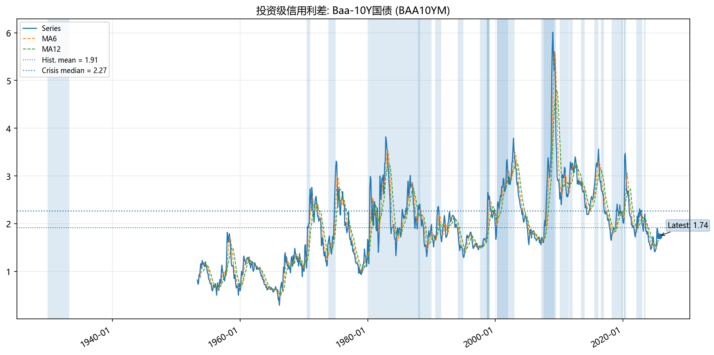
芝加哥金融状况指数 (NFCI)
- 当前值: -0.564
- 基准值: 0.163 (noncrisis_p75)
- 风险评分: 42.7/100 🟢 低风险
- 偏离度: -0.726
- 历史Z分数: 0.00
- 方向说明: 该指标越高越危险
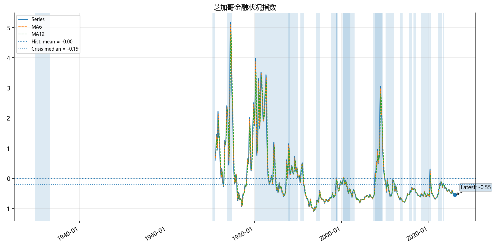
消费者信贷 YoY (TOTALSA)
- 当前值: 16.492
- 基准值: 16.910 (noncrisis_p75)
- 风险评分: 45.8/100 🟢 低风险
- 偏离度: -0.418
- 历史Z分数: 0.00
- 方向说明: 该指标越高越危险
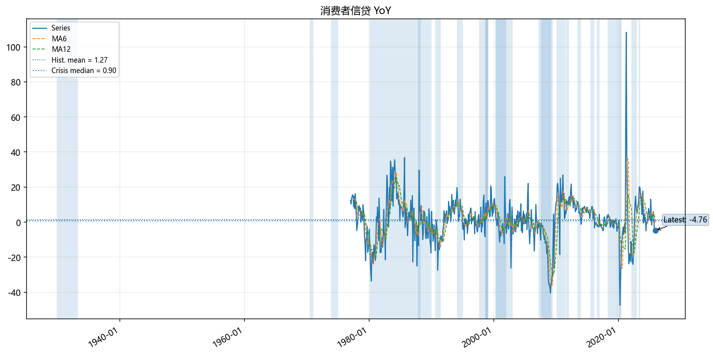
家庭债务偿付比率 (TDSP)
- 当前值: 11.249
- 基准值: 11.606 (crisis_median)
- 风险评分: 46.4/100 🟢 低风险
- 偏离度: -0.357
- 历史Z分数: 0.00
- 方向说明: 该指标越高越危险
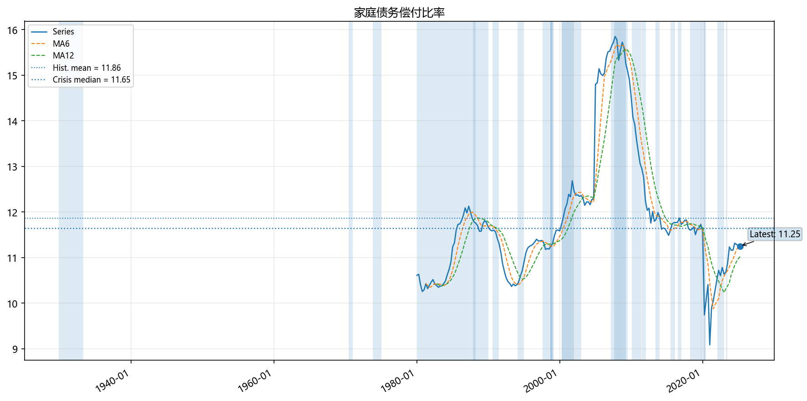
房贷违约率 (DRSFRMACBS)
- 当前值: 1.790
- 基准值: 2.345 (crisis_median)
- 风险评分: 44.5/100 🟢 低风险
- 偏离度: -0.555
- 历史Z分数: 0.00
- 方向说明: 该指标越高越危险
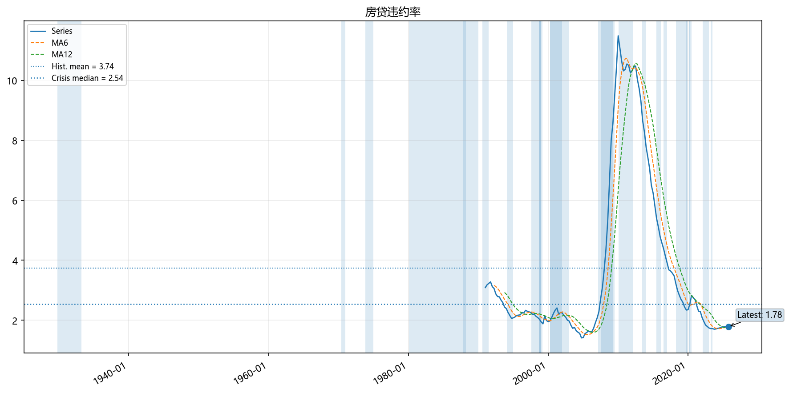
🔵 极低风险指标
联邦基金利率 (FEDFUNDS)
- 当前值: 4.330
- 基准值: 6.137 (noncrisis_p75)
- 风险评分: 31.9/100 🔵 极低风险
- 偏离度: -1.807
- 历史Z分数: 0.00
- 方向说明: 该指标越高越危险
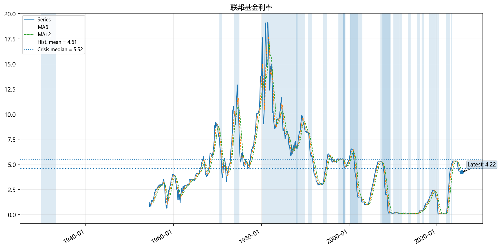
3个月国债利率 (DTB3)
- 当前值: 3.890
- 基准值: 5.670 (noncrisis_p75)
- 风险评分: 32.2/100 🔵 极低风险
- 偏离度: -1.780
- 历史Z分数: 0.00
- 方向说明: 该指标越高越危险
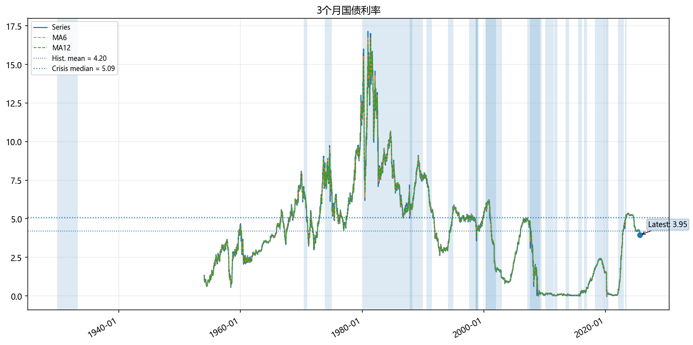
10年期国债利率 (DGS10)
- 当前值: 4.110
- 基准值: 7.560 (noncrisis_p75)
- 风险评分: 15.5/100 🔵 极低风险
- 偏离度: -3.450
- 历史Z分数: 0.00
- 方向说明: 该指标越高越危险
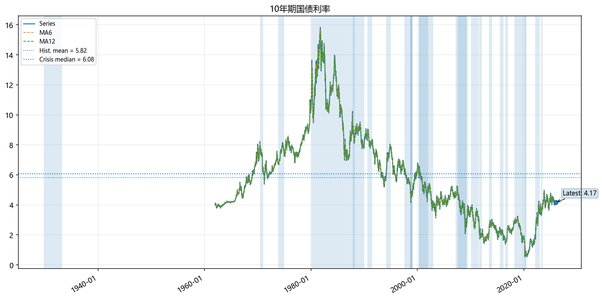
30年期抵押贷款利率 (MORTGAGE30US)
- 当前值: 6.260
- 基准值: 9.285 (noncrisis_p75)
- 风险评分: 19.7/100 🔵 极低风险
- 偏离度: -3.025
- 历史Z分数: 0.00
- 方向说明: 该指标越高越危险
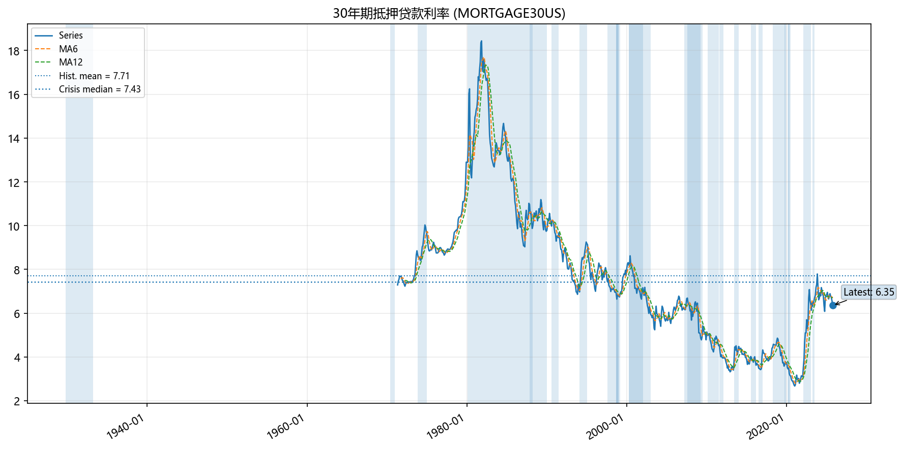
高收益债风险溢价 (BAMLH0A0HYM2)
- 当前值: 2.710
- 基准值: 4.575 (crisis_median)
- 风险评分: 31.3/100 🔵 极低风险
- 偏离度: -1.865
- 历史Z分数: 0.00
- 方向说明: 该指标越高越危险
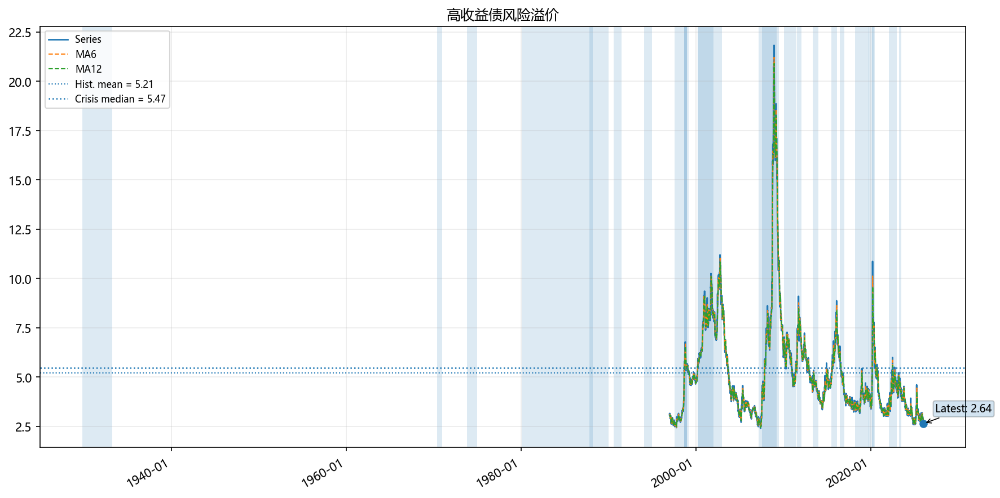
VIX波动率指数 (VIXCLS)
- 当前值: 15.700
- 基准值: 28.652 (noncrisis_p90)
- 风险评分: 0.0/100 🔵 极低风险
- 偏离度: -12.952
- 历史Z分数: 0.00
- 方向说明: 该指标越高越危险
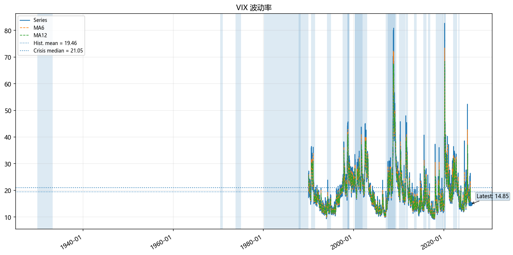
非农就业人数 YoY (PAYEMS)
- 当前值: 159540.000
- 基准值: 54137.250 (crisis_p25)
- 风险评分: 0.0/100 🔵 极低风险
- 偏离度: 105402.750
- 历史Z分数: 0.00
- 方向说明: 该指标越低越危险
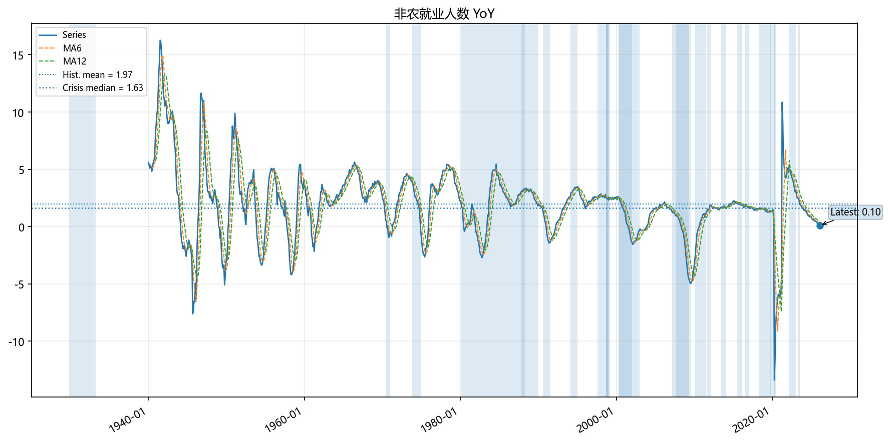
工业生产 YoY (INDPRO)
- 当前值: 103.920
- 基准值: 13.803 (crisis_p25)
- 风险评分: 0.0/100 🔵 极低风险
- 偏离度: 90.117
- 历史Z分数: 0.00
- 方向说明: 该指标越低越危险
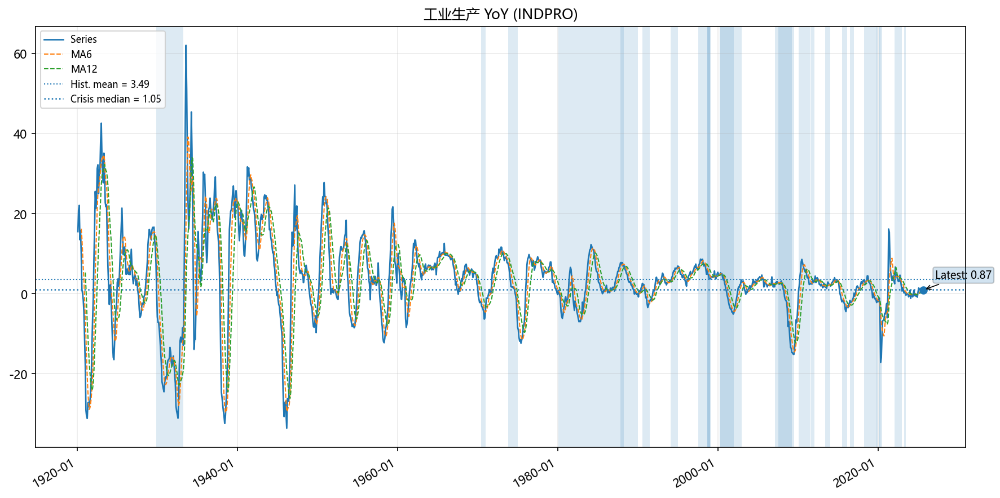
GDP YoY (GDP)
- 当前值: 30353.902
- 基准值: 823.054 (crisis_p25)
- 风险评分: 0.0/100 🔵 极低风险
- 偏离度: 29530.848
- 历史Z分数: 0.00
- 方向说明: 该指标越低越危险
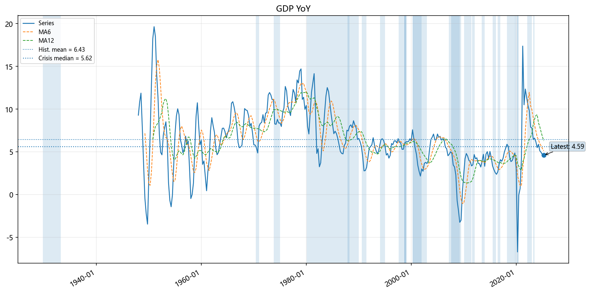
新屋开工（年化） (HOUST)
- 当前值: 1307.000
- 基准值: 1211.500 (crisis_p25)
- 风险评分: 0.0/100 🔵 极低风险
- 偏离度: 95.500
- 历史Z分数: 0.00
- 方向说明: 该指标越低越危险
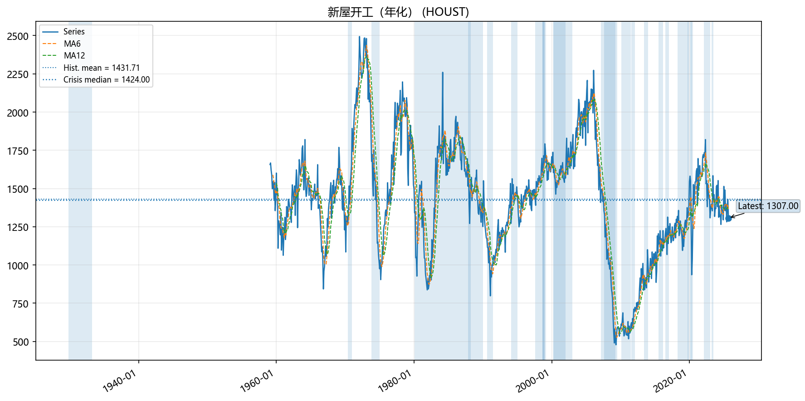
📋 指标配置表
| 指标名称 | 分组 | 基准分位 | 基准理由 | 变换方法 | 权重 |
|---|---|---|---|---|---|
| 收益率曲线倒挂: 10年期-3个月 | 收益率曲线 | noncrisis_p25 | 非危机期25%分位数作为警戒线 | level | 7.5% |
| 收益率曲线倒挂: 10年期-2年期 | 收益率曲线 | noncrisis_p25 | 非危机期25%分位数作为警戒线 | level | 7.5% |
| 联邦基金利率 | 利率水平 | noncrisis_p75 | 非危机期75%分位数作为警戒线 | level | 3.0% |
| 3个月国债利率 | 利率水平 | noncrisis_p75 | 非危机期75%分位数作为警戒线 | level | 3.0% |
| 10年期国债利率 | 利率水平 | noncrisis_p75 | 非危机期75%分位数作为警戒线 | level | 3.0% |
| 30年期抵押贷款利率 | 利率水平 | noncrisis_p75 | 非危机期75%分位数作为警戒线 | level | 3.0% |
| SOFR隔夜利率 | 利率水平 | noncrisis_p75 | 非危机期75%分位数作为警戒线 | level | 3.0% |
| 高收益债风险溢价 | 信用利差 | crisis_median | 危机期中位数作为警戒线 | level | 7.5% |
| 投资级信用利差: Baa-10Y国债 | 信用利差 | crisis_median | 危机期中位数作为警戒线 | level | 7.5% |
| 芝加哥金融状况指数 | 金融状况/波动 | noncrisis_p75 | 非危机期75%分位数作为警戒线 | level | 5.0% |
| VIX波动率指数 | 金融状况/波动 | noncrisis_p90 | 非危机期90%分位数作为警戒线 | level | 5.0% |
| 非农就业人数 YoY | 实体经济 | crisis_p25 | 危机期25%分位数作为警戒线 | yoy_pct | 5.0% |
| 工业生产 YoY | 实体经济 | crisis_p25 | 危机期25%分位数作为警戒线 | yoy_pct | 5.0% |
| GDP YoY | 实体经济 | crisis_p25 | 危机期25%分位数作为警戒线 | yoy_pct | 5.0% |
| 新屋开工（年化） | 房地产 | crisis_p25 | 危机期25%分位数作为警戒线 | level | 3.0% |
| 房价指数: Case-Shiller 20城 YoY | 房地产 | noncrisis_p90 | 非危机期90%分位数作为警戒线 | yoy_pct | 3.0% |
| 密歇根消费者信心 | 消费 | noncrisis_p35 | 非危机期35%分位数作为警戒线 | level | 4.0% |
| 消费者信贷 YoY | 消费 | noncrisis_p75 | 非危机期75%分位数作为警戒线 | yoy_pct | 4.0% |
| 总贷款与租赁 YoY | 银行业 | noncrisis_p75 | 非危机期75%分位数作为警戒线 | yoy_pct | 3.5% |
| 美联储总资产 YoY | 银行业 | crisis_median | 危机期中位数作为警戒线 | yoy_pct | 3.5% |
| 贸易加权美元指数 YoY | 外部环境 | noncrisis_median | 非危机期中位数作为警戒线 | yoy_pct | 5.0% |
| 企业债/GDP（名义，%） | 杠杆 | noncrisis_p65 | 非危机期65%分位数作为警戒线 | level | 10.0% |
| 银行准备金/存款（%） | 银行业 | noncrisis_p25 | 非危机期25%分位数作为警戒线 | level | 0.0% |
| 银行准备金/总资产（%） | 银行业 | noncrisis_p25 | 非危机期25%分位数作为警戒线 | level | 0.0% |
| 家庭债务偿付比率 | 消费 | crisis_median | 危机期中位数作为警戒线 | level | 0.0% |
| 房贷违约率 | 房地产 | crisis_median | 危机期中位数作为警戒线 | level | 0.0% |
📊 基准分位解释
- crisis_median: 危机期中位数
- crisis_p25: 危机期25%分位数
- crisis_p75: 危机期75%分位数
- noncrisis_median: 非危机期中位数
- noncrisis_p25: 非危机期25%分位数
- noncrisis_p35: 非危机期35%分位数
- noncrisis_p65: 非危机期65%分位数
- noncrisis_p75: 非危机期75%分位数
- noncrisis_p90: 非危机期90%分位数
📅 历史危机期间参考
本报告使用的历史危机期间包括：
- 大萧条 (GD_1929): 1929-10-01 至 1933-03-31
- 商业票据危机/宾州中央铁路 (CP_1970): 1970-05-01 至 1970-12-31
- 石油危机与滞胀 (OIL_7374): 1973-10-01 至 1974-12-31
- 储贷危机 (SANDL_8089): 1980-01-01 至 1989-12-31
- 黑色星期一 (CRASH_1987): 1987-10-01 至 1988-03-31
- 信贷紧缩衰退 (CREDIT_9091): 1990-07-01 至 1991-06-30
- 债券市场危机 (BOND_1994): 1994-01-01 至 1994-12-31
- LTCM/俄罗斯违约 (LTCM_1998): 1998-08-01 至 1999-02-28
- 互联网泡沫破裂 (DOTCOM_2000): 2000-03-01 至 2002-12-31
- 全球金融危机 (GFC_2008): 2007-07-01 至 2009-06-30
- 欧债危机 (EURO_2011): 2011-07-01 至 2012-01-31
- 美国回购市场危机 (REPO_2019): 2019-09-01 至 2019-10-31
- 新冠疫情现金争夺 (COVID_2020): 2020-02-15 至 2020-06-30
- 地区银行压力 (REG_BANK_2023): 2023-03-01 至 2023-06-30
- 亚洲金融危机 (ASIAN_1997): 1997-07-01 至 1998-12-31
- 俄罗斯金融危机 (RUSSIAN_1998): 1998-08-01 至 1998-12-31
- 科技股崩盘 (TECH_2000): 2000-03-01 至 2001-12-31
- 次贷危机 (SUBPRIME_2007): 2007-02-01 至 2008-09-30
- 雷曼兄弟破产 (LEHMAN_2008): 2008-09-01 至 2009-03-31
- 欧债危机初期 (EUROZONE_2010): 2010-01-01 至 2011-06-30
- 缩减恐慌 (TAPER_2013): 2013-05-01 至 2013-12-31
- 中国股市崩盘 (CHINA_2015): 2015-06-01 至 2016-02-29
- 英国脱欧 (BREXIT_2016): 2016-06-01 至 2016-12-31
- 贸易战 (TRADE_WAR_2018): 2018-03-01 至 2019-12-31
- 疫情初期 (PANDEMIC_2020): 2020-01-01 至 2020-04-30
- 通胀飙升 (INFLATION_2022): 2022-01-01 至 2022-12-31
⚠️ 免责声明
本报告仅供参考，不构成投资建议。历史数据不保证未来表现。